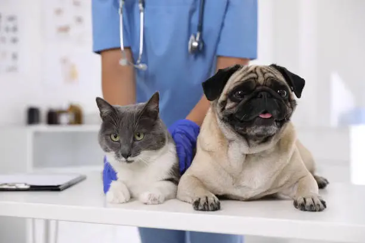

Dr. Juan Pérez
Especialidad: Cirugía general
Medico Veterinario Fundador de "Veterinaria La Mary", egresado en la Universidad de La Plata, con un amplio campo de experiencia en cirugías veterinarias
Consulta: $40.000,00

Un poquito de algunos de nuestros pacientes 😺🐶
En Veterinaria "La Mary", nos dedicamos a brindar el mejor cuidado para tus mascotas. Nuestro equipo de profesionales está comprometido con la salud y el bienestar de tus animales.
Ofrecemos una amplia gama de servicios veterinarios, desde consultas y vacunaciones hasta cirugías y hospitalización. Además, contamos con una tienda de alimentos y accesorios para mascotas.
Pedir Cita
Especialidad: Cirugía general
Medico Veterinario Fundador de "Veterinaria La Mary", egresado en la Universidad de La Plata, con un amplio campo de experiencia en cirugías veterinarias
Consulta: $40.000,00

Especialidad: Dermatología
Profesional formada en la facultad de Veterinarios de Hardware, con años de experiencia que avalan su carrera
Consulta: $35.000,00

Especialidad: Dermatología
Profesional formada en Universidad Catolica de Salta, con amplia experiencia en el tratamiento de afecciones de la piel y pelo en animales
Consulta: $35.000,00

Especialidad: Peluqueria Canina
Recibida en la Universidad de La Rioja, años de experiencia avalan su servicio
Consulta: $25.000,00

Especialidad: Especialista en Gerontes
Cuenta con postgrados en atencion de gerontes, recibida en la Universidad Nacional de Hawaii
Consulta: $35.000,00

Especialidad: Tecnico Radiologo
Especializacion de atención de pequeñas y medianas mascotas, cuenta con el servicio especializado y amplios conocimientos.
Consulta: $35.000,00

Especialidad: Felinos
Profesional formada en la facultad de Veterinarios de Hardware, con una maestria y postgrado en pequeños y grandes felinos.
Consulta: $35.000,00
Veterinaria La Mary cuenta con años de experiencia en el cuidado de mascotas. Nuestro objetivo es ofrecer un servicio integral que garantice la salud y felicidad de tus animales.
Contamos con un equipo de veterinarios altamente capacitados y apasionados por su trabajo, que se esfuerzan por brindar la mejor atención a cada paciente.